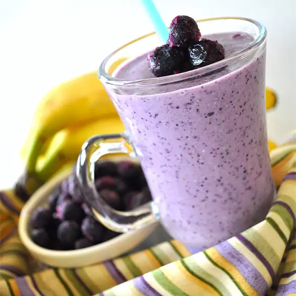

Razzy Blue Smoothie

The Razziest Blue Smoothie Around
Ingredients:
- 1 Banana
- 1/4 Cup Rolled Oats
- 1 Cup Frozen Blueberries
- 1 Cup Raspberry Yogurt
- 1/4 Cup Concord Grape Juice
- 1 Cup 1% Buttermilk
- 1 Tablespoon Flaxseed
- 16 Whole Almonds
Steps
- Peel the banana and cut into 1/2-inch chunks. Chill in freezer until solid, about 2 hours.
- Place the almonds, oats, and flaxseed meal into a blender; pulse until finely ground. Add the frozen banana, frozen blueberries, yogurt, grape juice, and buttermilk; puree until smooth.